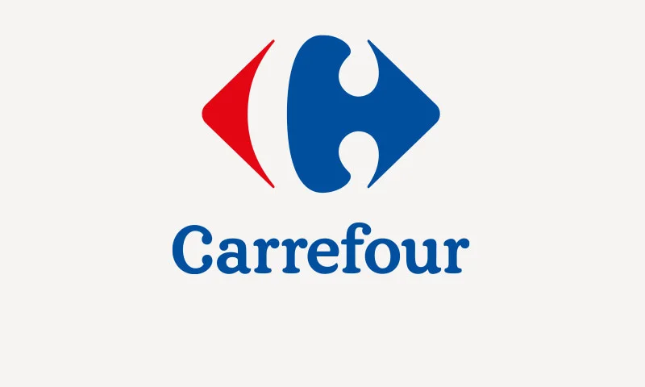
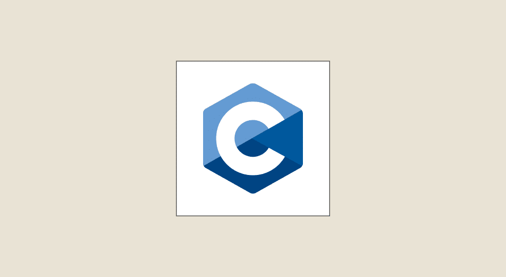
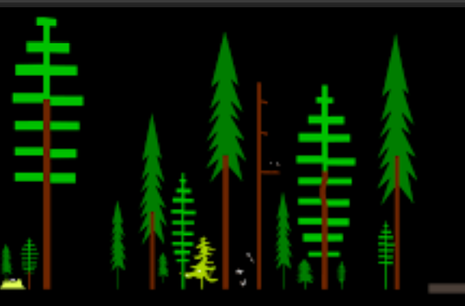
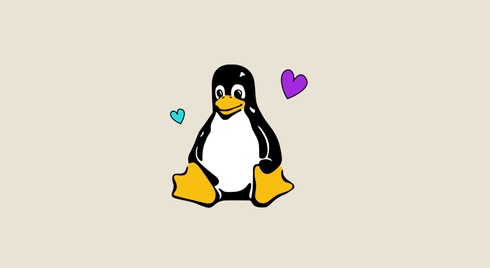
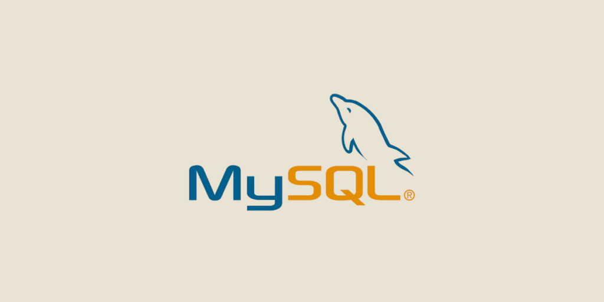
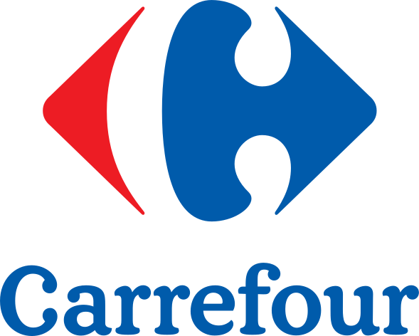

SAE 2.01 / 2.02 / 2.04
Puissance 4
Projet principal autour d'un jeu Puissance 4 : interface, logique de partie, joueur artificiel et travail de structuration autour des données.
Portfolio
Une sélection de projets réalisés pendant le BUT Informatique, entre programmation, interfaces, données et réseaux.
Projet principal autour d'un jeu Puissance 4 : interface, logique de partie, joueur artificiel et travail de structuration autour des données.
Outil autour de l'adressage IPv4 pour travailler les masques, les sous-réseaux et les plages d'adresses.

SAE 2.05Analyse d'un système d'information à partir de fichiers, d'incidents et de données métier pour proposer une vision plus claire de l'organisation.

SAE 1.01Programme répondant à un besoin client, avec structuration des données et logique applicative en langage C.

SAE 1.02Comparaison d'approches algorithmiques autour d'un système de gestion avec lecture et sauvegarde de données au format CSV.

SAE 1.03Mise en place d'un environnement de travail sous Unix/Linux avec configuration d'une machine virtuelle et des outils essentiels.

SAE 1.04Conception et implémentation d'une base de données, avec requêtes SQL, schéma relationnel et réflexion autour des enjeux liés aux données.

SAE 1.05 / 1.06Travail de recueil de besoins et d'étude d'une organisation, avec analyse économique, écologique et production de supports de présentation.